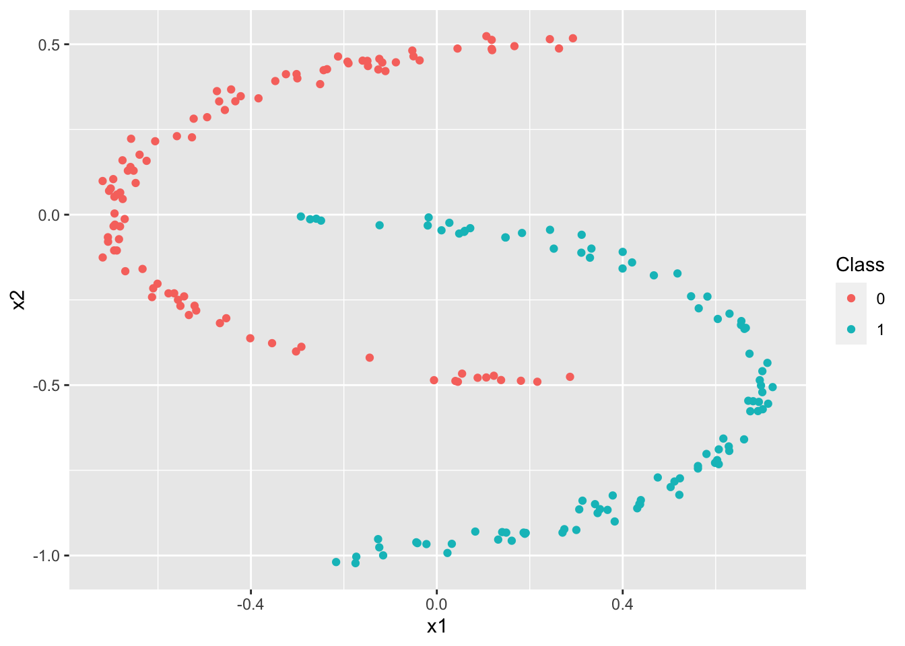
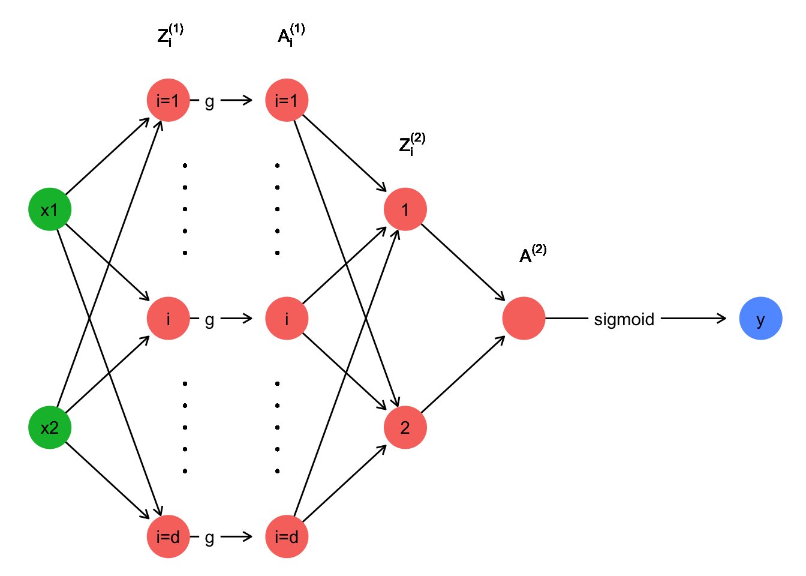
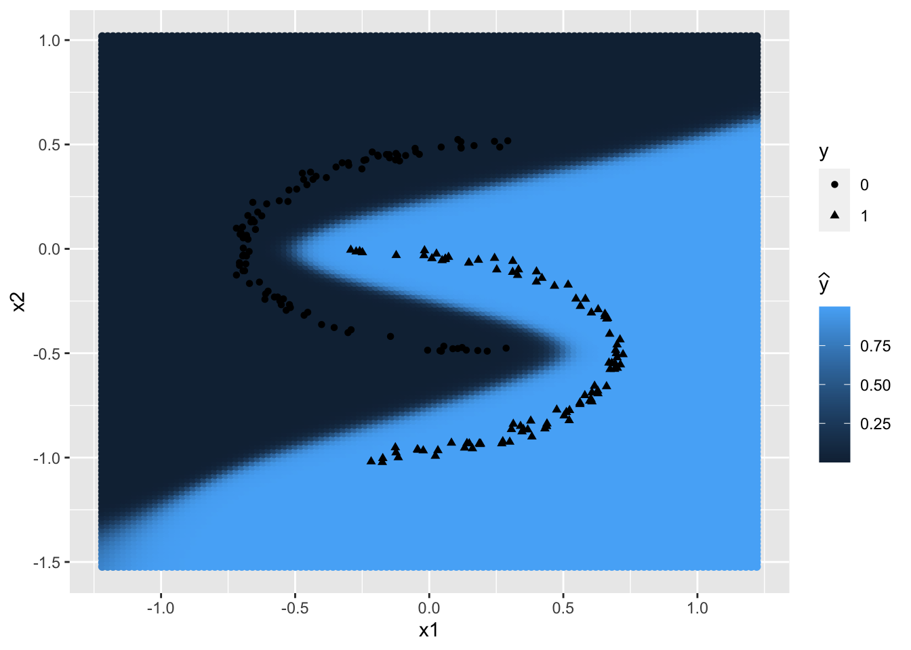
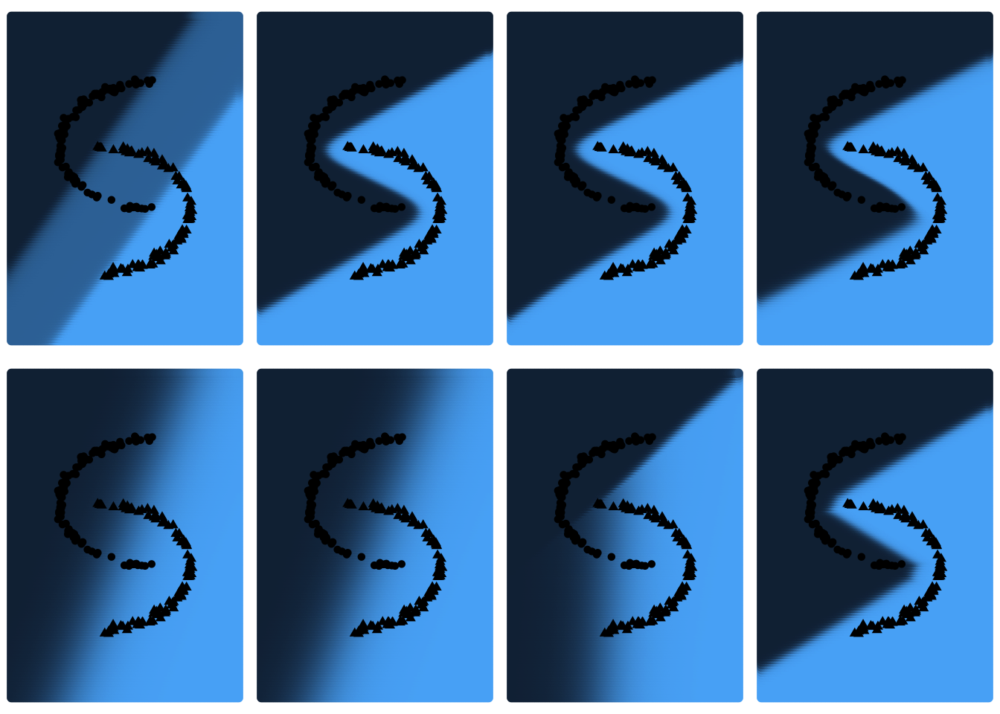
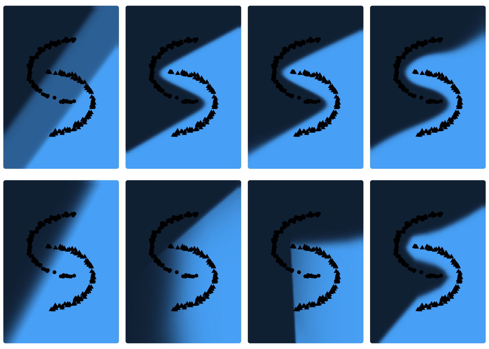
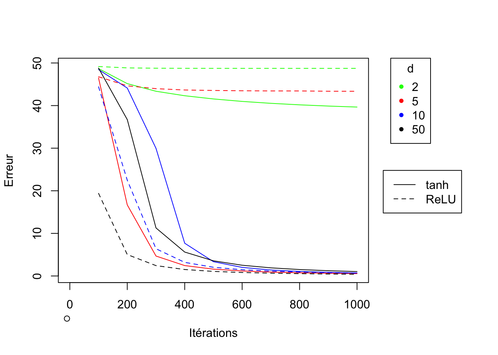

Constructing a Neural Network by Hand
Data simulation
We have the following data simulation procedure:
We start by choosing the number of points for each class (\(N=100\)) as well as the number of classes (\(K=2\)). So, we have \(N * K = 200\) points. We also choose the data dimension \(p\). For our example we choose \(p=2\), which means that the points are in \(\mathbb{R}^2\) and that the coordinates of such a point are represented by a vector of length 2.
N = 100 # number of points by class
p = 2 # data dimension
K = 2 # number of classes
where \(\theta \sim \mathcal{U} \left( -\frac{\pi}{2},\frac{\pi}{2} \right)\)
Let \(x^{(i)}=\left(x^{(i)}_1,x^{(i)}_2\right)\) be a point in \(\mathbb{R}^2\) pour \(i = 1,\ldots,N*K\). This is repeated for our \(N \times K\) points and each point is associated to \(y^{(i)} \in \{0.1\}\) which indicates the class in which \(x\) is located. We then have \(x = \begin{pmatrix} x^{(1)} \\ \vdots \\ x^{(N*K)} \end{pmatrix} = \begin{pmatrix} x_1^{(1)} & x_2^{(1)} \\ \vdots & \vdots \\ x_1^{(N*K)} & x_2^{(N*K)} \end{pmatrix} \;\) and
X = matrix(0,N*K,p) # matrix containing the coordinates of the N*K points
r = 0.5 # radius
t = runif(N,-pi/2,pi/2) # theta
X[1:N,1] = 0.3-2*r*cos(t)+ rnorm(N,0,0.02)
X[1:N,2] = r*sin(t) + rnorm(N,0,0.02)
t = runif(N,-pi/2,pi/2) # theta
X[N+1:N,1] = -.3+2*r*cos(t)+ rnorm(N,0,0.02)
X[N+1:N,2] = -0.5+r*sin(t) + rnorm(N,0,0.02)
y = c(rep(0,N),rep(1,N)) # class labels
dataclassif = data.frame(x1=X[,1],x2=X[,2],y=y)
# Transformation of the vector y for further steps
y = as.numeric(unlist(dataclassif[3]))
# Plot data
ggplot(data=dataclassif, mapping=aes(x=x1,y=x2, color=factor(y))) +
geom_point() +
scale_colour_discrete("Class")

Complete network function \(\hat{y}(x,\theta)\)
We have \(W^{[1]} = \begin{bmatrix} w_{1 1}^{[1]} & w_{1 2}^{[1]}\\ \vdots & \vdots\\ w_{d 1}^{[1]} & w_{d 2}^{[1]} \end{bmatrix} \quad ; \quad\) \(b^{[1]} = \begin{bmatrix} b_1^{[1]}\\ \vdots\\ b_d^{[1]} \end{bmatrix} \quad ; \quad\) \(W^{[2]} = \begin{bmatrix} w_1^{[2]} & \dots & w_d^{[2]} \end{bmatrix} \quad ; \quad\) \(b^{[2]} \in \mathbb{R}\)
We note \(\theta = \left(W^{[1]}, b^{[1]}, W^{[2]}, b^{[2]} \right)\).
We have \(x=(x_1,x_2) \in \mathbb{R}^2\).
We therefore findPartial derivatives of \(\mathcal{L}(\cdot)\)
We look for the parameters \(\theta=\left(W^{[1]}, b^{[1]}, W^{[2]}, b^{[2]}\right)\) which minimize the crossentropy loss functionHowever, as we minimize the loss function by gradient descent, we first need to compute the gradients.
Gradients
We note \(\hat{y}[m]=\hat{y}\left(x^{(m)}, W^{[1]}, b^{[1]}, W^{[2]}, b^{[2]}\right)\) \[\begin{align*} \frac{\partial \mathcal{L}}{\partial \hat{y}[m]} &= \frac{1-y^{(m)}}{1-\hat{y}[m]} - \frac{y^{(m)}}{\hat{y}[m]} \\& = \frac{\hat{y}[m] - y^{(m)}}{\hat{y}[m](1-\hat{y}[m])} \end{align*}\]Followingly, the gradient with respect to \(y[m]\) is given by \(\boxed{\nabla_{y}\mathcal{L} = \frac{y_{pred} - y}{y_{pred}(1-y_{pred})}}\).
We havewhere \(\mathbf{1}\) is a matrix of the same size where all coefficients are equal to 1.
\[\begin{align*} \frac{\partial \mathcal{L}}{\partial W_i^{[2]}} &= \sum_{m=1}^{M} \frac{\partial \mathcal{L}}{\partial Z_m^{[2]}} \frac{\partial Z_m^{[2]}}{\partial W_i^{[2]}} \\ &= \sum_{m=1}^{M} \frac{\hat{y}[m] - y^{(m)}}{\hat{y}[m](1-\hat{y}[m])} \times \sigma\left(Z_m^{[2]}\right) \times \left(1-\sigma\left(Z_m^{[2]}\right)\right) \times A_{i m}^{[1]} \end{align*}\]We have \(\boxed{\nabla_{W^{[2]}} \mathcal{L} = \nabla_{Z^{[2]}} \mathcal{L} \times \left(A^{[1]}\right)'}\)
We find \(\boxed{\nabla_{A^{[1]}} \mathcal{L} = \left(W^{[2]}\right)' \nabla_{Z^{[2]}} \mathcal{L}}\)
g) On a \[\begin{align*} \frac{\partial \mathcal{L}}{\partial W_{i j}^{[1]}} &= \sum_{m=1}^{M} \frac{\partial \mathcal{L}}{\partial Z_{i m}^{[1]}} \frac{\partial Z_{i m}^{[1]}}{\partial W_{i j}^{[1]}} \\ &= \sum_{m=1}^{M} \frac{\hat{y}[m] - y^{(m)}}{\hat{y}[m](1-\hat{y}[m])} \times \sigma\left(Z_m^{[2]}\right) \times \left(1-\sigma\left(Z_m^{[2]}\right)\right) \times g'(Z_{i m}^{[1]}) \times x_j^{(m)} \end{align*}\]We find that \(\boxed{\nabla_{W^{[1]}} \mathcal{L} = \nabla_{Z^{[1]}} \mathcal{L} \times x}\)

Training the neural network
We initialize the algorithm by choosing starting weights and offset vectors, i.e. choose the starting value of \(\theta = \left(W^{[1]}, b^{[1]}, W^{[2]}, b^{[2]} \right)\). We then use \(\theta\) and the \(x\) matrix to make a first prediction (which will probably be very bad) using the \(\hat{y}(x,\theta)\) function previously defined. These predictions then allow to successively compute all the gradients of the previous section. Following the principle of gradient descent, the weights and offset vectors are updated as follows (for a step size \(\alpha > 0\)):We repeat this procedure with the new value of \(\theta\) by making a new prediction of \(y\) (which will be more accurate for each new iteration). In order to be able to implement the algorithm in R we start by defining the functions necessary for the training part of the network as well as the loss function.
# tanh activation function (possible choice for g)
tanh <- function(z){
return((exp(z)-exp(-z))/(exp(z)+exp(-z)))
}
# ReLU activation function (possible choice for g)
ReLU = function(z){
return(z*(z>0))
}
# sigmoid activation function
sigmoid = function(z){
return(1/(1+exp(-z)))
}
# Prediction function (depends on the choice of g)
prediction <- function(x,w1,b1,w2,b2,g){
Z <- w1 %*% t(x) + b1%*% matrix(1,1,dim(x)[1])
if (g == "tanh"){
return(as.vector(sigmoid(w2 %*% tanh(Z) + b2 * matrix(1,1,dim(x)[1]))))
}
if (g == "ReLU"){
return(as.vector(sigmoid(w2 %*% ReLU(Z) + b2 * matrix(1,1,dim(x)[1]))))
}
}
# Cross entropy loss function
loss <- function(y_pred,y){
return(sum(-y*log(y_pred)-(1-y)*log(1-y_pred)))}
We continue by coding the network training algorithm. We store this algorithm in a function named NNet which takes as argument the \(x^{(m)}\), the associated class \(y^{(m)}\), the gradient descent step size \(\alpha\), the number of iterations niter, the number d of neurons on the hidden layer, the activation function g and a positive number k defining the interval \([-k;k]\) to simulate the initial weights in a more or less random way.
NNet = function(X, y, rate, niter, d, g, k){
# Simulation of starting weights and offset vectors
w1 = matrix(runif(n=2*d,-k,k),d,2)
b1 = matrix(runif(n=d,-k,k),d,1)
w2 = matrix(runif(n=d,-k,k),1,d)
b2 = runif(n=1,-k,k)
for(iter in 1:niter){
y_pred = prediction(X,w1,b1,w2,b2,g)
Z1 <- w1 %*% t(X) + b1%*% matrix(1,1,dim(X)[1])
if (g=="tanh") {A1 <- tanh(Z1)}
if (g=="ReLU") {A1 <- ReLU(Z1)}
Z2 <- w2 %*% A1 + b2 * matrix(1,1,dim(X)[1])
# Calcul des gradients
grad_y_pred = (y_pred - y)/(y_pred*(1-y_pred))
grad_Z2 = as.vector(sigmoid(Z2)*(1-sigmoid(Z2))) * grad_y_pred
grad_w2 = grad_Z2 %*% t(A1)
grad_b2 = sum(grad_Z2)
grad_A1 = t(w2) %*% grad_Z2
if(g=="tanh"){
grad_Z1 = grad_A1 * (1-A1^2)}
if(g=="ReLU"){
grad_Z1 = grad_A1 * (Z1>0)}
grad_w1 = grad_Z1 %*% X
grad_b1 = rowSums(grad_Z1)
# Updating the parameters
w2 =w2 - rate*grad_w2
b2 =b2 - rate*grad_b2
w1 =w1 - rate*grad_w1
b1 =b1 - rate*grad_b1
}
return(list(y=y_pred,w1=w1,b1=b1,w2=w2,b2=b2))
}
In order to test the algorithm we arbitrarily choose d, g, \(\alpha\) and niter and use the data generated at the beginning of the exercise to train the network. The algorithm is initialized with random initial weights in \([-1;1]\).
# Number of neurones ont the hidden layer
d = 5
# Activation function g
g = "tanh"
# Model training
NNet_model = NNet(X=X, y=y, rate=0.01, niter=10000, d, g, k=1)
The values of \(W^{[1]}, b^{[1]}, W^{[2]}, b^{[2]}\) are then stored in NNet_model.
Plane segmentation
We define a segmentation function that uses the weights \(W^{[1]}\) and \(W^{[2]}\) as well as the offset vectors \(b^{[1]}\) and \(b^{[2]}\) obtained by training the neural network to graphically present the plane segmentation. In order to do this, the segmentation function calculates the probability of belonging to the class \(\mathcal{C}_0\), using the neural network and the weights previously determined during the training phase, for a large number of points in the plane and then returns the colored plane according to these probabilities.
segmentation = function(w1, b1, w2, b2){
# Setting up the grid
x1grid <- seq(min(dataclassif$x1)-.5,max(dataclassif$x1)+.5,by=.02)
x2grid <- seq(min(dataclassif$x2)-.5,max(dataclassif$x2)+.5,by=.02)
xgrid <- expand.grid(x1grid,x2grid)
# Computation of y_pred for every grid point
ygrid <- prediction(xgrid,w1,b1,w2,b2,g)
datapred <- data.frame(x1=xgrid[,1],x2=xgrid[,2],y=ygrid)
# Plane segmentation graphic
predviz <- ggplot() + geom_point(datapred,mapping=aes(x=x1, y=x2,color=y)) +
geom_point(dataclassif,mapping=aes(x=x1,y=x2,shape=factor(y))) +
labs(shape="y",colour=TeX("\\widehat{y}"))
return(predviz)
}
The parameters of the previously created NNet_model are used to plot a first plane segmentation.
segmentation(NNet_model$w1, NNet_model$b1, NNet_model$w2, NNet_model$b2)

Experimentations
Model training based on different initialisations
The network will be trained repeatedly for different initialisation settings, including different weights, different values of d, and different activation functions g (tanh and ReLU). Then, the error function values obtained from the different initialisation settings are compared. In addition, the resulting plane segmentations for these different initialisation settings will be displayed. These graphs will be displayed in the same order as the associated error function values from the displayed table. The influence of the number of iterations will be observed in the next section.
We start by choosing small weights in \([-0.1 ; 0.1]\) and \(d \in \{2,5,10,50\}\) and \(g \in \{tanh, ReLU\}\).
set.seed(1)
# Values for d
d_values = c(2,5,10,50)
# Intervall for initial weights --> [-0.1 ; 0.1]
k=0.1
loss_results_1 = matrix(NA, nrow=2, ncol=length(d_values), dimnames=list(c("tanh","ReLU")))
plots_1=list() ; i=1
for(g in c("tanh","ReLU")){
for (d in d_values){
NNet_model = NNet(X=X, y=y, rate=0.01, niter=10000, d=d, g, k)
loss_results_1[which(c("tanh","ReLU")==g), which(d_values==d)] = loss(NNet_model$y,y)
plots_1[[i]]=segmentation(NNet_model$w1, NNet_model$b1, NNet_model$w2, NNet_model$b2) +
theme_void() + theme(legend.position = "none") ; i = i+1
}
}
Loss function values
# Table with loss results
kable(loss_results_1, col.names=c("d=2","d=5","d=10","d=50"))
| d=2 | d=5 | d=10 | d=50 | |
|---|---|---|---|---|
| tanh | 37.28769 | 0.0387096 | 0.0395267 | 0.0524006 |
| ReLU | 48.73767 | 48.7376746 | 39.3000640 | 0.0266989 |
Plane segmentations
# Plane segmentations
grid.arrange(grobs=as.list(plots_1), ncol=4)

For \(g=tanh\) and \(g=ReLU\) with \(d=2\) and \(d \in \{2;5;10\}\) respectively the neural network provides results that are not very satisfactory. For other initialisations, however, the loss of the network is very low. Graphically, one can also observe the different plane segmentations for the different initialisations of the network. For networks with large loss function values, the plane segmentation seems to be rather linear, which is not very consistent with the data. We would now like to determine whether a different initialisation setting of the weights affects these results. We repeat this procedure, but this time we choose larger weights, more precisely in \([-2;2]\).
set.seed(2)
# Values for d
d_values = c(2,5,10,50)
# Intervall for initial weights --> [-2 ; 2]
k=2
loss_results_2 = matrix(NA, nrow=2, ncol=length(d_values), dimnames=list(c("tanh","ReLU")))
plots_2=list() ; i=1
for(g in c("tanh","ReLU")){
for (d in d_values){
NNet_model = NNet(X=X, y=y, rate=0.01, niter=10000, d=d, g, k)
loss_results_2[which(c("tanh","ReLU")==g), which(d_values==d)] = loss(NNet_model$y,y)
plots_2[[i]]=segmentation(NNet_model$w1, NNet_model$b1, NNet_model$w2, NNet_model$b2) +
theme_void() + theme(legend.position = "none") ; i = i+1
}
}
Loss function values
# Loss function values
kable(loss_results_2, col.names=c("d=2","d=5","d=10","d=50"))
| d=2 | d=5 | d=10 | d=50 | |
|---|---|---|---|---|
| tanh | 37.27624 | 0.0366755 | 0.0332603 | 0.0237575 |
| ReLU | 54.89825 | 39.2993755 | 34.2858837 | 0.0184794 |
Plane segmentations
# Plane segmentations
grid.arrange(grobs=as.list(plots_2), ncol=4)

We notice that the results are very similar to the results of the first simulation, but still improved. We can therefore see that the initialization of the weights has an influence on the result. On the other hand, once again the network is not able to provide optimal results for \(d=2\) and \(g=tanh\) and for \(d \in \{2;5\}\) with \(g=ReLU\). But this time for \(g=ReLU\) and \(d=10\), the network loss function is able to approach 0, which was not the case before. One could assume that this could be due to the non-convexity of the cross entropy loss function. A bad initialisation of the weights then prevents the gradient descent from converging to the global optimum. Only a local optimum is then found, which could explain the poor results for some of the initialisation settings tested.
Intermediate display of the loss function value
To be able to display the value of the error function every 100 iterations just add the line if (iter%%100 == 0){…} in the network training algorithm. This line allows to detect if for the n-th iteration n is a multiple of 100. The following code is the previously modified code such that this new NNet_intermed_losses function additionally returns the vector containing the loss function value every 100 iterations.
NNet_intermed_losses = function(X, y, rate, niter, d, g, k){
# Initialisation of weights
w1 = matrix(runif(n=2*d,-k,k),d,2)
b1 = matrix(runif(n=d,-k,k),d,1)
w2 = matrix(runif(n=d,-k,k),1,d)
b2 = runif(n=1,-k,k)
loss_vector=c() # intermediate loss function values
for(iter in 1:niter){
y_pred = prediction(X,w1,b1,w2,b2,g)
Z1 <- w1 %*% t(X) + b1%*% matrix(1,1,dim(X)[1])
if (g=="tanh") {A1 <- tanh(Z1)}
if (g=="ReLU") {A1 <- ReLU(Z1)}
Z2 <- w2 %*% A1 + b2 * matrix(1,1,dim(X)[1])
# Computation of gradients
grad_y_pred = (y_pred - y)/(y_pred*(1-y_pred))
grad_Z2 = as.vector(sigmoid(Z2)*(1-sigmoid(Z2))) * grad_y_pred
grad_w2 = grad_Z2 %*% t(A1)
grad_b2 = sum(grad_Z2)
grad_A1 = t(w2) %*% grad_Z2
if(g=="tanh"){
grad_Z1 = grad_A1 * (1-A1^2)}
if(g=="ReLU"){
grad_Z1 = grad_A1 * (Z1>0)}
grad_w1 = grad_Z1 %*% X
grad_b1 = rowSums(grad_Z1)
# Updating the parameters
w2 =w2 - rate*grad_w2
b2 =b2 - rate*grad_b2
w1 =w1 - rate*grad_w1
b1 =b1 - rate*grad_b1
if (iter%%100 == 0){loss_vector=c(loss_vector, loss(y_pred,y))}
}
return(list(y=y_pred,w1=w1,b1=b1,w2=w2,b2=b2,loss_vector=loss_vector))
}
set.seed(4)
# Number of iterations and values fo d
d_values = c(2,5,10,50)
niter=1000
data = data.frame(matrix(NA, nrow = floor(niter/100), ncol = 0))
# Model training for g=tanh and different values of d
g = "tanh"
for (d in d_values){
NNet_model = NNet_intermed_losses(X=X, y=y, rate=0.01, niter, d, g, k=1)
data = cbind(data,NNet_model$loss_vector)
}
# Model training for g=ReLU and different values of d
g = "ReLU"
for (d in d_values){
NNet_model = NNet_intermed_losses(X=X, y=y, rate=0.01, niter, d, g, k=1)
data = cbind(data,NNet_model$loss_vector)
}
# Graphic of loss function value training history
par(xpd = T, mar = par()$mar + c(0,0,0,7))
plot(-10,-10,xlim=c(0,niter),ylim=c(min(data),max(data)),
xlab = "Itérations", ylab= "Erreur")
lines(100*(1:dim(data)[1]), data[,1], col="green")
lines(100*(1:dim(data)[1]), data[,2], col="red")
lines(100*(1:dim(data)[1]), data[,3], col="blue")
lines(100*(1:dim(data)[1]), data[,4], col="black")
lines(100*(1:dim(data)[1]), data[,5], col="green",lty=2)
lines(100*(1:dim(data)[1]), data[,6], col="red",lty=2)
lines(100*(1:dim(data)[1]), data[,7], col="blue",lty=2)
lines(100*(1:dim(data)[1]), data[,8], col="black",lty=2)
legend("topright", inset=c(-0.2,0), legend=d_values, col=c("green","red","blue","black"),pch=20, title="d")
legend("topright", inset=c(-0.3,0.5), legend=c("tanh","ReLU"), lty=c(1,2))

par(mar=c(5, 4, 4, 2) + 0.1)
It is clear, as expected, that in general, performance is better if d is large. On the other hand, it is difficult to determine whether to prefer the tanh or ReLU function as a choice for the g activation function, as it strongly depends on the value of d. While the ReLU function gives better results for large values of d (\(d=50\)), it is strongly advised to prefer \(g=tanh\) if d is small (\(\leq 5\)). However, if \(d=2\) the network loss function value does not approach 0 for both activation functions.
Conclusion
This article allows us to see that the construction of such a neural network in itself is not as complicated as one might think. Even if this example of a neural network is very simple, the principle will remain the same for networks with more hidden layers, with more neurons or with higher dimension input data or multi-class predictions. In my opinion, the complexity lies rather in the optimization of the network, i.e. fnding the best combination of hyperparameters. Already for a network as simple as this one, one would have the choice between several activation functions for both the hidden layer and the output layer, different values of \(d\) and different values of the initial weights. The number of possible combinations of these parameters already seems almost infinite. In this example we have already managed to find good initialisations settings for large values of \(d\). However, if we wanted to optimize the model, for instance, for \(d=2\), we would have to continue initialising the network for all kinds of different initial weights.